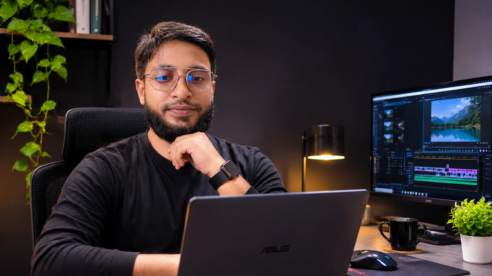

▶
Software & Tech Tutorials
Screen recordings, smart zooms, click highlights and clean pacing.
HELLO, I'M
I turn raw recordings into clear, polished YouTube videos that are easy to follow and enjoyable to watch. Thoughtful storytelling, precise edits, and AI-assisted workflows — always with a human creative touch.

01 / SELECTED WORK
My focus is on making complex ideas feel simple. Featured projects will appear here as soon as the approved video links are added.
Screen recordings, smart zooms, click highlights and clean pacing.
Clear visual explanations and engaging tutorials for modern tools.
Step-by-step guidance with focused visual cues and smooth motion.
These are category previews, not examples of completed client projects. Real video samples will be linked here after approval.
02 / WHAT I DO
I help creators deliver tutorials that feel professional, purposeful and easy to understand.
Software demonstrations, screen recordings, visual highlights and smooth, intentional pacing.
01Clean animated titles, subtle transitions, precise zooms and on-screen callouts.
02Talking-head content, instructional structure and edits that support clarity.
03Using AI tools thoughtfully to streamline production while retaining human creative decisions and quality checks.
0403 / ABOUT ME
I'm Md Abdul Kadir, a YouTube video editor based in Bangladesh with nearly five years of experience. I specialize in technology, software, AI tools and educational tutorials. My approach is simple: make every step clear, keep the visuals engaging, and respect the viewer's time.
I work primarily with Adobe Premiere Pro and CapCut, and I use AI-powered tools to support research, ideation and editing workflows. Creative judgment and final quality control remain my responsibility.
Let's work together ↗04 / LET'S CONNECT
Looking for a long-term YouTube editor? I'd love to hear about your channel and your goals.
Email me ↗Business email will be added before publishing.